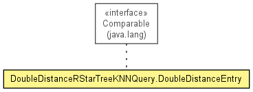

de.lmu.ifi.dbs.elki.index.tree.spatial.rstarvariants.query
Class DoubleDistanceRStarTreeKNNQuery.DoubleDistanceEntry
java.lang.Object
 de.lmu.ifi.dbs.elki.index.tree.spatial.rstarvariants.query.DoubleDistanceRStarTreeKNNQuery.DoubleDistanceEntry
de.lmu.ifi.dbs.elki.index.tree.spatial.rstarvariants.query.DoubleDistanceRStarTreeKNNQuery.DoubleDistanceEntry
- All Implemented Interfaces:
- Comparable<DoubleDistanceRStarTreeKNNQuery.DoubleDistanceEntry>
- Enclosing class:
- DoubleDistanceRStarTreeKNNQuery<O extends SpatialComparable>
class DoubleDistanceRStarTreeKNNQuery.DoubleDistanceEntry
- extends Object
- implements Comparable<DoubleDistanceRStarTreeKNNQuery.DoubleDistanceEntry>

Optimized double distance entry implementation.
| Methods inherited from class java.lang.Object |
clone, equals, finalize, getClass, hashCode, notify, notifyAll, toString, wait, wait, wait |
entry
SpatialEntry entry
- Referenced entry
distance
double distance
- Distance value
DoubleDistanceRStarTreeKNNQuery.DoubleDistanceEntry
public DoubleDistanceRStarTreeKNNQuery.DoubleDistanceEntry(SpatialEntry entry,
double distance)
- Constructor.
- Parameters:
entry - Entrydistance - Distance
compareTo
public int compareTo(DoubleDistanceRStarTreeKNNQuery.DoubleDistanceEntry o)
- Specified by:
compareTo in interface Comparable<DoubleDistanceRStarTreeKNNQuery.DoubleDistanceEntry>